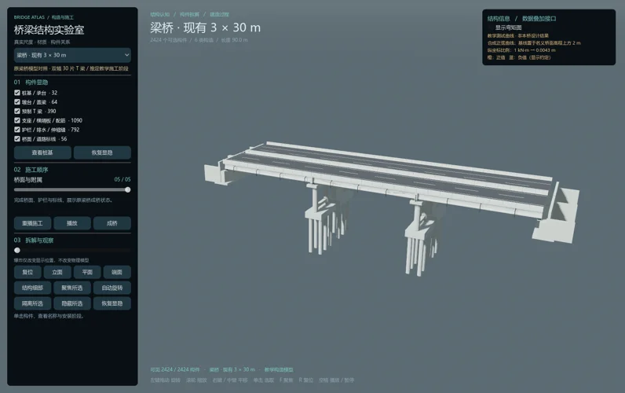
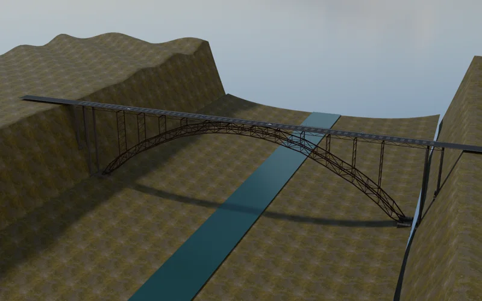
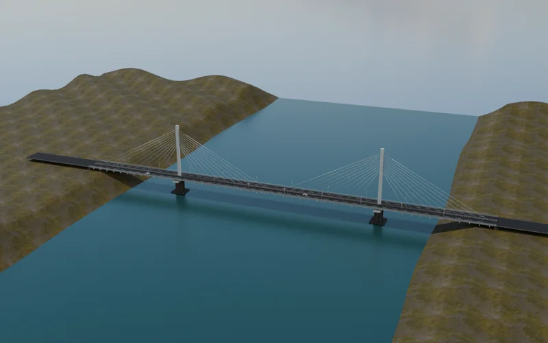
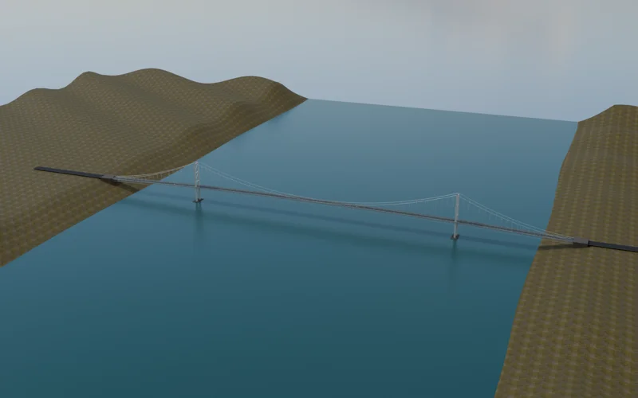
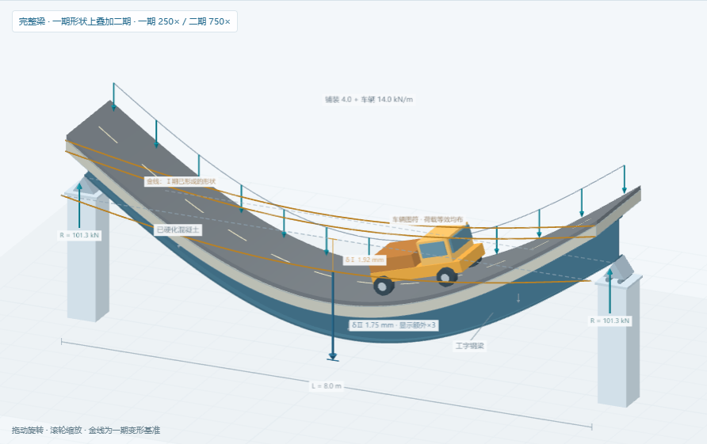
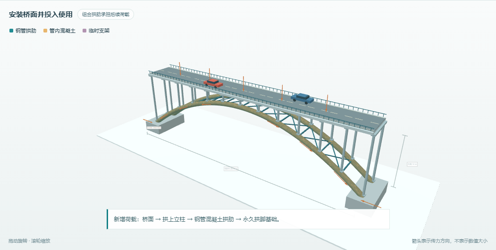

梁
三跨T梁桥
3 × 30 m 跨径布置
从桥面板找到T梁，再寻找梁端支座与桥墩。
观察重点 梁的弯曲与支承

梁
3 × 30 m 跨径布置
从桥面板找到T梁，再寻找梁端支座与桥墩。
观察重点 梁的弯曲与支承

拱
518.16 m 主拱跨径
沿桥面下的立柱向下看，辨认钢桁拱与两端拱脚。
观察重点 拱肋与水平推力

斜拉
224 m 主跨
查看中央单索面的索梁锚点，比较塔、梁和索的连接。
观察重点 塔—梁—索协同

悬索
1006 m 主跨
从加劲梁经吊索找到主缆，再追踪桥塔与端部锚固。
观察重点 主缆与锚固体系
预览为教学模型取景，各桥未采用同一画面比例尺。

观察二期受力 ↗
观察管内混凝土 ↗拱桥专题 · 钢管与核心混凝土
从支架上的分段空管开始，观察合龙、管内灌注、硬化卸架和桥面加载。透过管壁看混凝土由拱脚向拱顶推进，再沿立柱与拱肋追踪荷载如何到达两端基础。
60 m 上承式双肋教学模型，采用自拟支架拼装路径；颜色与箭头表示材料、工序和传力关系，不代表有限元应力。
带着问题操作
从侧面看总体体系，再转到桥面下方辨认横向联系。手机可单指旋转、双指缩放。
分开构件看组成，隐藏桥面看内部。恢复组装状态后，再判断实际连接与传力。
逐阶段查看永久构件的安装与临时设施的退场，比较“正在建造”与“已经成桥”的体系。
专注结构时关闭背景；需要场景时再打开，环境画质可选标准或流畅。
上方四类整桥模型用于识别构件、比较结构体系与观察施工顺序。尺寸依据与教学简化共同构成模型；局部构造、场景和分阶段展示不等同于完整竣工资料或施工验算。四类整桥的弯矩曲线是教学示意，未接入实桥有限元计算结果。新增组合梁专题提供短期线弹性简支梁解析值；钢管混凝土拱桥专题只定性展示构造与施工阶段，不输出应力或有限元结果。
结构构件保持原模型细节。网页按桥分开加载；环境独立加载，关闭背景后仍可完整观察桥梁主体。原始资料的版权属于各自权利人，本页提供出处链接。